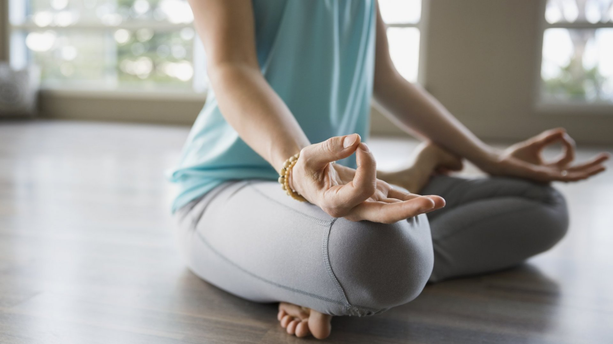

Once you start meditating, you might run into some problems. Whether it be losing motivation or not finding the time to meditate, it might be helpful to know some tips to help with your struggles. It may be best to come back to this guide when you're feeling stuck and need more inspiration!
You might feel discouraged when trying to meditate for a long period of time and you're not able to. If you want to build a habit of meditation or with anything really, it's best to start with something low effort. This helps as it's not hard to do and you slowly build that habit. We recommend doing around 5 minutes as a beginner so once that becomes too easy, try increase your time whenever you feel like it!
If you're struggling to meditate or want to change it up, try meditate in a different location. This can help challenge you and experience new sensations. For example, you can try in a car, train or in the park.
Many beginners lose motivation to meditate simply because they feel they are doing it right. Their mind always wanders and it's hard for them to stay fully aware. I'm here to tell you that it's completely normal and happens to everyone. These thoughts that are created come and go so you don't need push them away or doing much really. Just acknowledge their presence and bring your attention back to the present!
If you find it hard to focus on your breath while meditating, try listen to some meditation music. These can often times help you relax and you can make this your focus during your session.
Writing can a good way to reflect on your experience which can help you learn more about yourself. You can write down how you felt before, during and after the session. Take note of any changes in your mood or body.